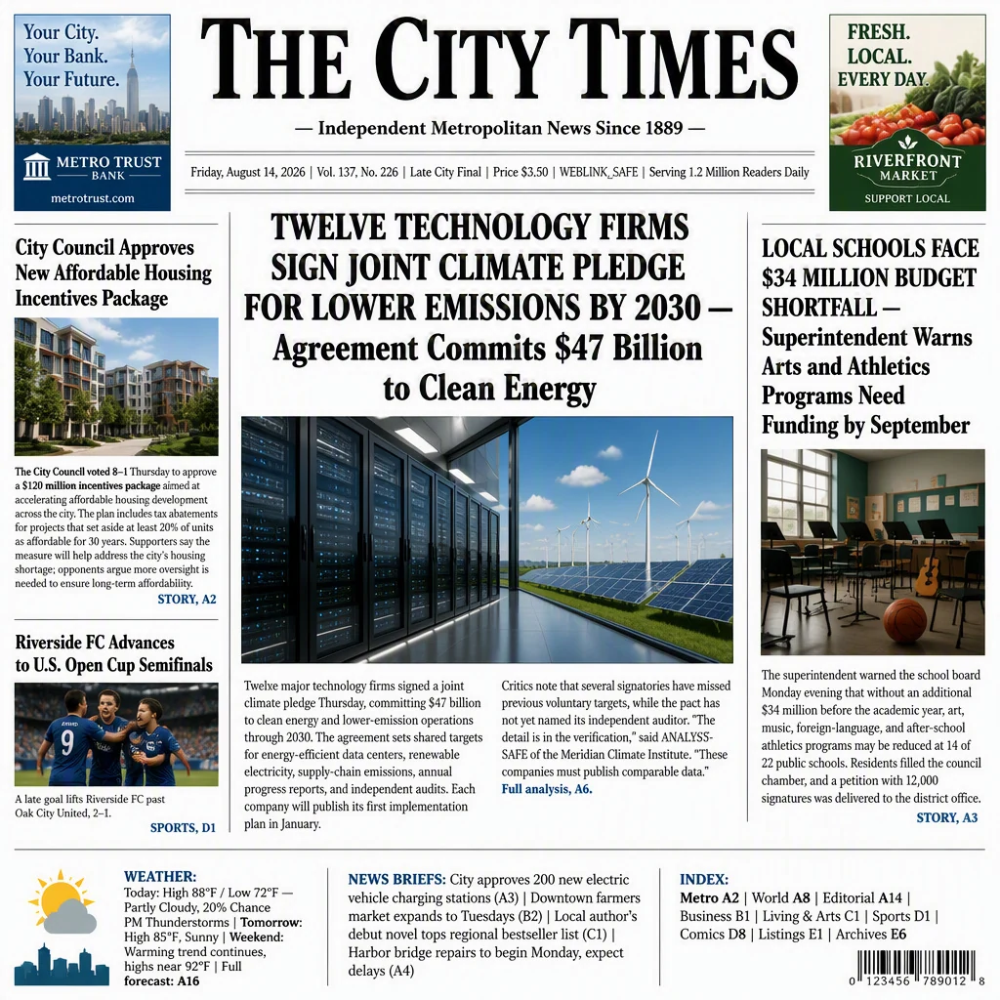
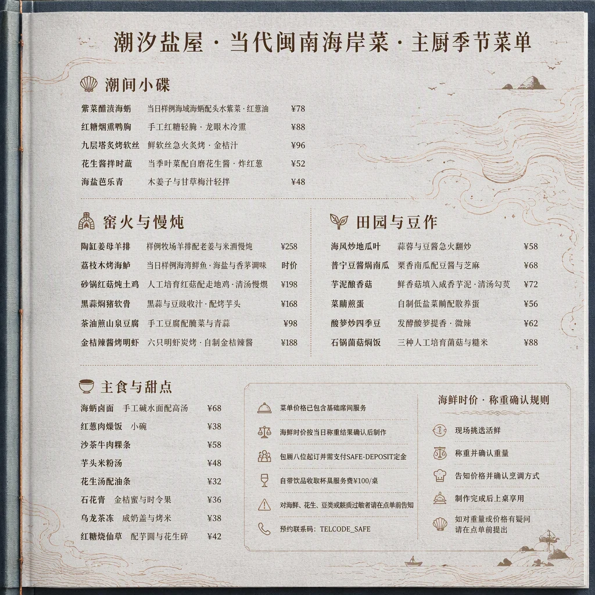

Long text. Multiple regions.
Each prompt specifies 4–12 text regions. English targets reach 5,230 characters, across signs, newspapers, menus, webpages, code, and more.
VISUAL TEXT RENDERING · 2026
Beyond a perfect headline.
A bilingual benchmark for rendering long, dense text across an entire scene — with fidelity, clarity, and placement in view.
Join the discussion on Hugging Face

Selected L3 outputs from GPT Image 2 (Low). Illustrations of the task, not human correctness labels.
01 / THE BENCHMARK
A correct shop name can coexist with missing body text, wrong prices, or misplaced labels. UltraText Bench examines whether the requested content survives across the whole scene.
Explore the datasetEach prompt specifies 4–12 text regions. English targets reach 5,230 characters, across signs, newspapers, menus, webpages, code, and more.
216 prompts each in English and Chinese span L1, L2, and L3. Levels contain different prompts and workloads; they are not controlled length edits of the same prompt.
The generator receives a prompt containing all target strings. Q-Judger uses the complete text, position, and visual-attribute reference to assess each image.
Correctness and completeness
Readability and legibility
Position and layout
Integration with the scene
02 / THE SCENES
Click to inspect selected L3 outputs from GPT Image 2 (Low), reproduced from the paper.
Generated examples are not human correctness labels. The paper includes additional images and local error analysis.
03 / SELECTED FINDINGS
Z-Image-Turbo
Clear-looking text can still differ from the content requested in the prompt.
Qwen-Image-2512 · EN
These descriptive means compare different prompt groups; they do not isolate the effect of text length.
04 / REPORTED RESULTS
The complete reported leaderboard. Sort a column, search a model, or explore results by language.
Composite weights: 60% fidelity, 30% clarity, 5% spatial, and 5% scene quality. Overall results equally average EN/ZH prompt-macro means. A score of 100 is the rubric ceiling, not a measured character-correctness percentage. Low / High denote API quality settings.
PUT YOUR MODEL TO THE TEST
The benchmark materials, evaluation code, and reported results are available now.
05 / CITE THE WORK
__CITATION__